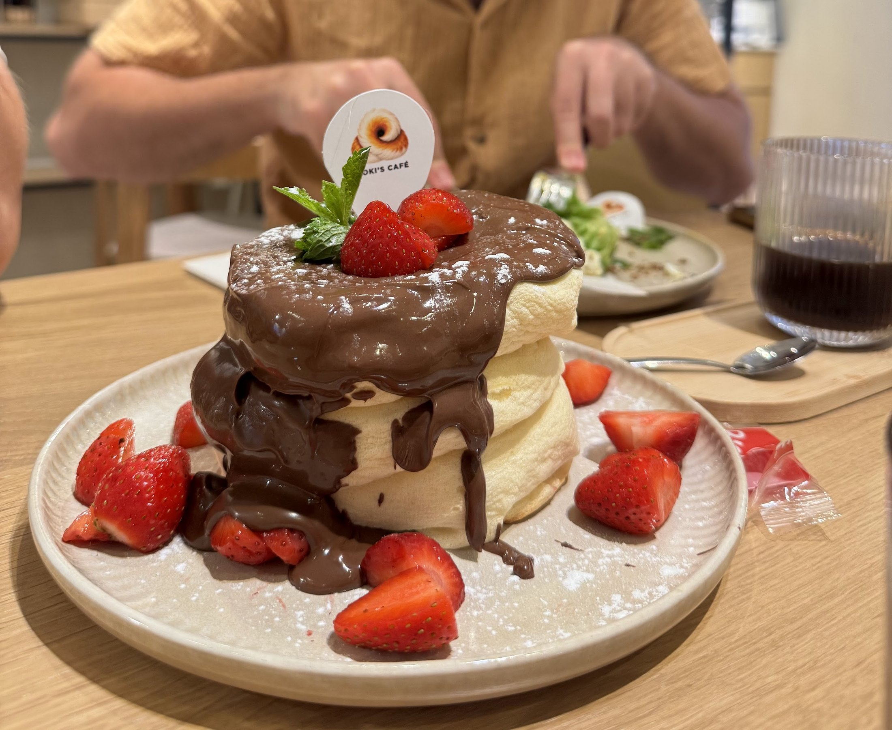
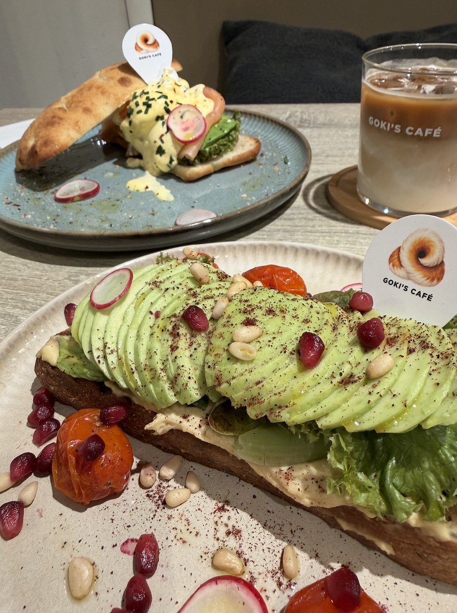
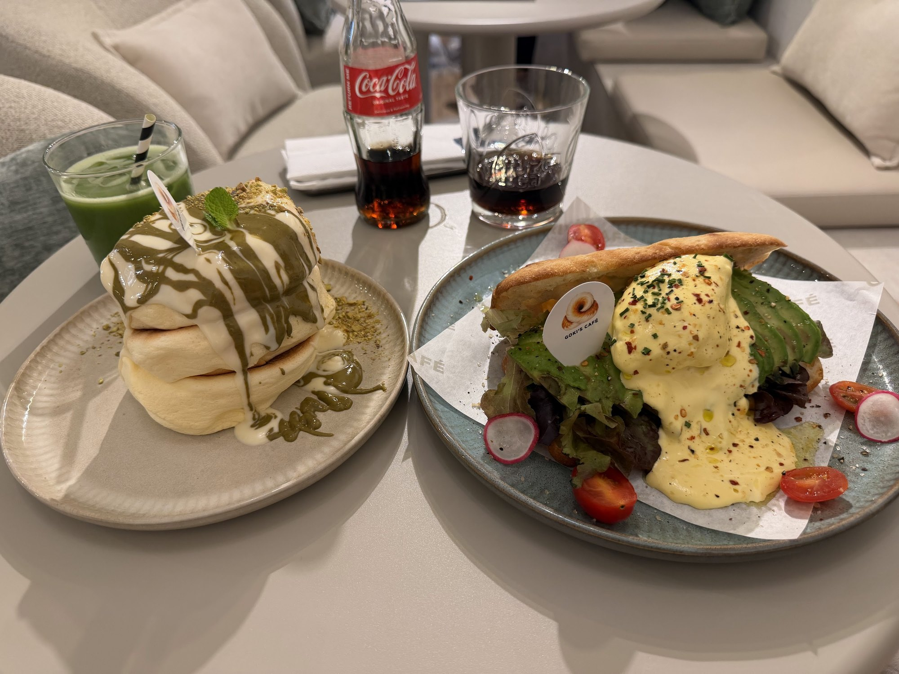
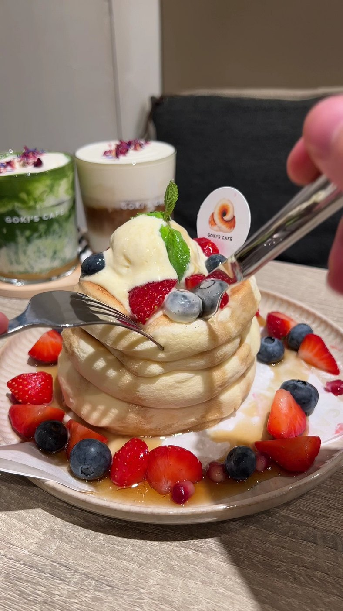
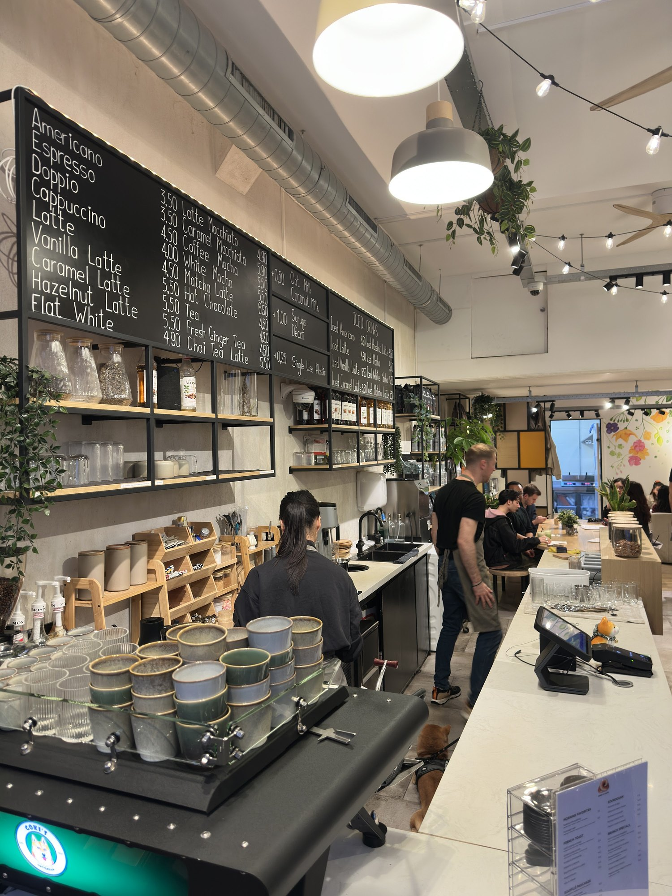

Soufflé pancakes & brunch in Amsterdam
A small, warm walk-in café on Barndesteeg, a few steps from Nieuwmarkt. It takes its name from Goki, the resident shiba.


Three good reasons
Made to order, plated generously, best enjoyed slowly. A quick taste before you open the full menu.

Soufflé pancakes
Japanese-style, whipped and folded to order. A limited number each day, so when they're gone, they're gone.
See the menu
Brunch & toast
Signature French toast, sourdough plates, benedicts and bigger specials. Generous and comforting.
See the menu
Coffee & matcha
Specialty espresso, matcha and hojicha, hot or iced. Plus clouds, blends and fruity refreshers.
See the drinksLoved on Google
and Tripadvisor
A 4.9 average across hundreds of visits, for the soufflé pancakes, the matcha and the welcome. Here is what a few guests had to say.
Genuine guest reviews from Google and Tripadvisor; the Google reviews are translated from Dutch.

Named after a dog
who runs the place
Goki is the shiba inu the café takes its name from. Most days you will find him somewhere in the room. The space is small and warm, all oak, cream tile, hanging plants and string lights, a short walk from Nieuwmarkt.
The whole menu,
on two cards
Morning plates, French toast, soufflé pancakes, sourdough and brunch. Plus a long list of coffee, matcha and fruity refreshers. Flip through, or open the menu.
Barndesteeg 13H,
Amsterdam
A few steps from Nieuwmarkt, in the old heart of the city. Walk-in only, no reservations. Soufflé pancakes are limited each day, so come a little early on weekends.